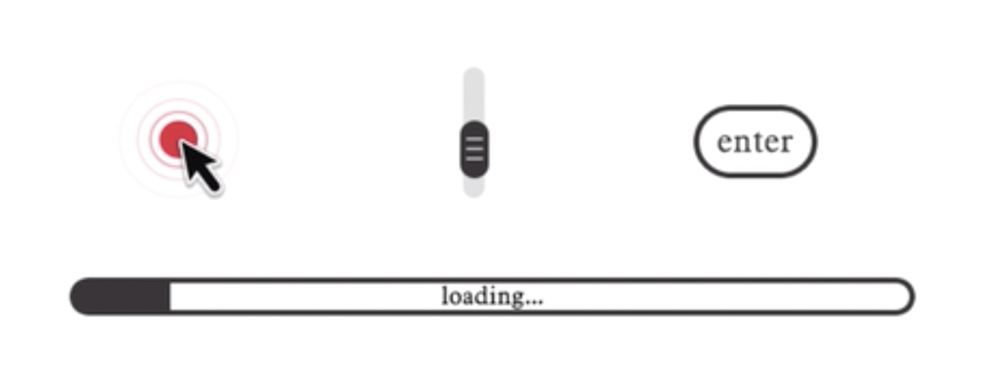
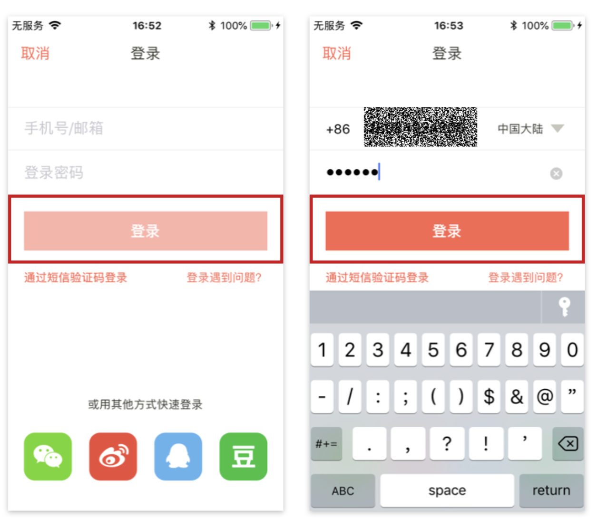
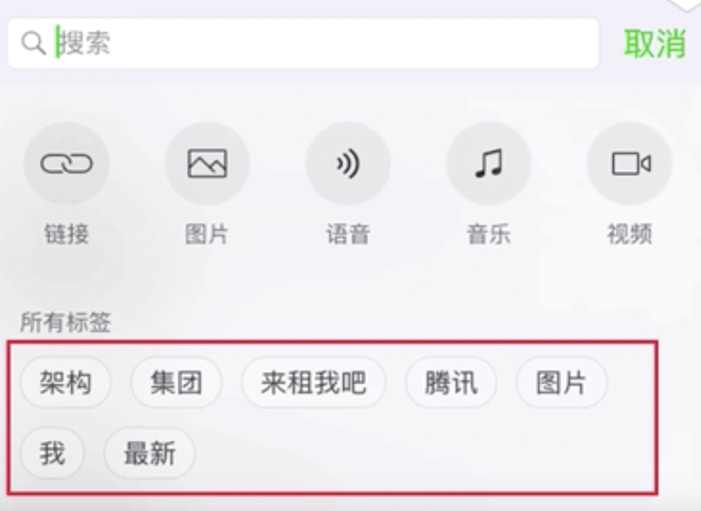

<!DOCTYPE html>
<html>
<head><meta name="generator" content="Hexo 3.8.0">
  <meta charset="utf-8">
  
  <title>尼尔森十大原则 | guowj</title>
  <meta name="viewport" content="width=device-width, initial-scale=1, maximum-scale=1">
  
  <meta name="keywords" content="产品交互设计">
  
  
  
  
  <meta name="description" content="&amp;nbsp;&amp;nbsp;&amp;nbsp;&amp;nbsp;&amp;nbsp;&amp;nbsp;尼尔森（Jakob Nielsen）是一位人机交互学博士。尼尔森十大可用性原则就是它提出的。他拥有 79 项美国专利,专利主要涉及让互联网更容易使用的方法。今天这篇文章主要来记录下尼尔森十大原则，给自己加深下记忆。">
<meta name="keywords" content="产品,交互设计">
<meta property="og:type" content="article">
<meta property="og:title" content="尼尔森十大原则">
<meta property="og:url" content="https://gwjacqueline.github.io/尼尔森十大原则/index.html">
<meta property="og:site_name" content="guowj">
<meta property="og:description" content="&amp;nbsp;&amp;nbsp;&amp;nbsp;&amp;nbsp;&amp;nbsp;&amp;nbsp;尼尔森（Jakob Nielsen）是一位人机交互学博士。尼尔森十大可用性原则就是它提出的。他拥有 79 项美国专利,专利主要涉及让互联网更容易使用的方法。今天这篇文章主要来记录下尼尔森十大原则，给自己加深下记忆。">
<meta property="og:locale" content="zh-CN">
<meta property="og:image" content="https://gwjacqueline.github.io/images/pm/ztkgz.png">
<meta property="og:image" content="https://gwjacqueline.github.io/images/pm/tjyhgz.png">
<meta property="og:image" content="https://gwjacqueline.github.io/images/pm/yhkkyz.png">
<meta property="og:image" content="https://gwjacqueline.github.io/images/pm/yzxyz.png">
<meta property="og:image" content="https://gwjacqueline.github.io/images/pm/nesfcyz.png">
<meta property="og:image" content="https://gwjacqueline.github.io/images/pm/zrqghy.png">
<meta property="og:image" content="https://gwjacqueline.github.io/images/pm/zrqghy2.png">
<meta property="og:image" content="https://gwjacqueline.github.io/images/pm/lhgxyz.png">
<meta property="og:image" content="https://gwjacqueline.github.io/images/pm/ysyz.png">
<meta property="og:image" content="https://gwjacqueline.github.io/images/pm/ysyz2.png">
<meta property="og:image" content="https://gwjacqueline.github.io/images/pm/rcyz.png">
<meta property="og:image" content="https://gwjacqueline.github.io/images/pm/rxhbzgz.png">
<meta property="og:updated_time" content="2019-07-16T08:13:40.527Z">
<meta name="twitter:card" content="summary">
<meta name="twitter:title" content="尼尔森十大原则">
<meta name="twitter:description" content="&amp;nbsp;&amp;nbsp;&amp;nbsp;&amp;nbsp;&amp;nbsp;&amp;nbsp;尼尔森（Jakob Nielsen）是一位人机交互学博士。尼尔森十大可用性原则就是它提出的。他拥有 79 项美国专利,专利主要涉及让互联网更容易使用的方法。今天这篇文章主要来记录下尼尔森十大原则，给自己加深下记忆。">
<meta name="twitter:image" content="https://gwjacqueline.github.io/images/pm/ztkgz.png">
  
    <link rel="alternate" href="/atom.xml" title="guowj" type="application/atom+xml">
  

  

  <link rel="icon" href="/css/images/mylogo.png">
  <link rel="apple-touch-icon" href="/css/images/mylogo.png">
  
    <link href="//fonts.googleapis.com/css?family=Source+Code+Pro" rel="stylesheet" type="text/css">
  
  <link href="https://fonts.googleapis.com/css?family=Open+Sans|Montserrat:700" rel="stylesheet" type="text/css">
  <link href="https://fonts.googleapis.com/css?family=Roboto:400,300,300italic,400italic" rel="stylesheet" type="text/css">
  <link href="//netdna.bootstrapcdn.com/font-awesome/4.0.3/css/font-awesome.css" rel="stylesheet">
  <style type="text/css">
    @font-face{font-family:futura-pt; src:url("../css/fonts/FuturaPTBold.otf") format("woff");font-weight:500;font-style:normal;}
    @font-face{font-family:futura-pt-light; src:url("../css/fonts/FuturaPTBook.otf") format("woff");font-weight:lighter;font-style:normal;}
    @font-face{font-family:futura-pt-italic; src:url("../css/fonts/FuturaPTBookOblique.otf") format("woff");font-weight:400;font-style:italic;}
}

  </style>
  <link rel="stylesheet" href="/css/style.css">

  <script src="/js/jquery-3.1.1.min.js"></script>
  <script src="/js/bootstrap.js"></script>

  <!-- Bootstrap core CSS -->
  <link rel="stylesheet" href="/css/bootstrap.css">

  
    <link rel="stylesheet" href="/css/dialog.css">
  

  

  
    <link rel="stylesheet" href="/css/header-post.css">
  

  
  
  
    <link rel="stylesheet" href="/css/vdonate.css">
  

</head>
</html>


  <body data-spy="scroll" data-target="#toc" data-offset="50">


  
  <div id="container">
    <div id="wrap">
      
        <header>

    <div id="allheader" class="navbar navbar-default navbar-static-top" role="navigation">
        <div class="navbar-inner">
          
          <div class="container"> 
            <button type="button" class="navbar-toggle" data-toggle="collapse" data-target=".navbar-collapse">
              <span class="sr-only">Toggle navigation</span>
              <span class="icon-bar"></span>
              <span class="icon-bar"></span>
              <span class="icon-bar"></span>
            </button>

            
              <a class="brand" style="
                 margin-top: 0px;" href="#" data-toggle="modal" data-target="#myModal">
                  
              </a>
            
            
            <div class="navbar-collapse collapse">
              <ul class="hnav navbar-nav">
                
                  <li> <a class="main-nav-link" href="/">首页</a> </li>
                
                  <li> <a class="main-nav-link" href="/archives">归档</a> </li>
                
                  <li> <a class="main-nav-link" href="/categories">分类</a> </li>
                
                  <li> <a class="main-nav-link" href="/tags">标签</a> </li>
                
                  <li><div id="search-form-wrap">

    <form class="search-form">
        <input type="text" class="ins-search-input search-form-input" placeholder>
        <button type="submit" class="search-form-submit"></button>
    </form>
    <div class="ins-search">
    <div class="ins-search-mask"></div>
    <div class="ins-search-container">
        <div class="ins-input-wrapper">
            <input type="text" class="ins-search-input" placeholder="请输入关键词...">
            <span class="ins-close ins-selectable"><i class="fa fa-times-circle"></i></span>
        </div>
        <div class="ins-section-wrapper">
            <div class="ins-section-container"></div>
        </div>
    </div>
</div>
<script>
(function (window) {
    var INSIGHT_CONFIG = {
        TRANSLATION: {
            POSTS: '文章',
            PAGES: '页面',
            CATEGORIES: '分类',
            TAGS: '标签',
            UNTITLED: '(无标题)',
        },
        ROOT_URL: '/',
        CONTENT_URL: '/content.json',
    };
    window.INSIGHT_CONFIG = INSIGHT_CONFIG;
})(window);
</script>
<script src="/js/insight.js"></script>

</div></li>
            </ul></div>
          </div>
                
      </div>
    </div>

</header>


      
            
      <div id="content" class="outer">
        
          <section id="main" style="float:none;"><article id="post-尼尔森十大原则" style="width: 75%; float:left;" class="article article-type-post" itemscope itemprop="blogPost">
  <div id="articleInner" class="article-inner">
    
    
      <header class="article-header">
        
  
    <h1 class="thumb" itemprop="name">
      尼尔森十大原则
    </h1>
  

      </header>
    
    <div class="article-meta">
      
	<a href="/尼尔森十大原则/" class="article-date">
	  <time datetime="2019-07-14T03:20:18.000Z" itemprop="datePublished">2019-07-14</time>
	</a>

      
    <a class="article-category-link" href="/categories/产品/">产品</a>

      
	<a class="article-views">
	<span id="busuanzi_container_page_pv">
		阅读量<span id="busuanzi_value_page_pv"></span>
	</span>
	</a>

      

    </div>
    <div class="article-entry" itemprop="articleBody">
      
        <blockquote>
<p>&nbsp;&nbsp;&nbsp;&nbsp;&nbsp;&nbsp;尼尔森（Jakob Nielsen）是一位人机交互学博士。尼尔森十大可用性原则就是它提出的。他拥有 79 项美国专利,专利主要涉及让互联网更容易使用的方法。今天这篇文章主要来记录下<strong>尼尔森十大原则</strong>，给自己加深下记忆。</p>
</blockquote>
<a id="more"></a>
<h2 id="状态可感知原则（Visibility-of-system-status-）"><a href="#状态可感知原则（Visibility-of-system-status-）" class="headerlink" title="状态可感知原则（Visibility of system status ）"></a>状态可感知原则（Visibility of system status ）</h2><p>&nbsp;&nbsp;&nbsp;&nbsp;&nbsp;&nbsp;系统应该让用户时刻清楚当前发生了什么。在<strong>适当的时间内做出适当的反馈。</strong>用户的任何操作，不论是单击、滚动还是按下键，等待，页面应即使给出反馈。绝不能在用户操作后毫无反应，让用户一脸懵的猜到底是怎么了。</p>
<div align="center"><br>  <br></div>

<h2 id="贴近用户认知（Match-between-system-and-the-real-world）"><a href="#贴近用户认知（Match-between-system-and-the-real-world）" class="headerlink" title="贴近用户认知（Match between system and the real world）"></a>贴近用户认知（Match between system and the real world）</h2><p>&nbsp;&nbsp;&nbsp;&nbsp;&nbsp;&nbsp;系统应该用用户的语言，用词，短语和用户熟悉的概念，而不是系统术语。遵循现实世界的惯例，让信息符合自然思考逻辑。这一点融汇起来就是 3 个字：说人话。网页的一切表现和表述，应该尽可能贴近用户所在的环境(年龄、学历、文化、时代背景)。就比如一个时间的图标，在大多数用户的认知世界里，时钟是能让人马上联想到时间，有右图抽象的表达会让用户产生困惑。</p>
<div align="center"><br>  <br></div>

<h2 id="用户可控原则-撤销重做原则（User-control-and-freedom）"><a href="#用户可控原则-撤销重做原则（User-control-and-freedom）" class="headerlink" title="用户可控原则/撤销重做原则（User control and freedom）"></a>用户可控原则/撤销重做原则（User control and freedom）</h2><p>&nbsp;&nbsp;&nbsp;&nbsp;&nbsp;&nbsp;用户常常会误触到某些功能，我们应该让用户可以方便的退出。这种情况下，我们应该把“紧急出口”按钮做的明显一点，而且不要在退出时弹出额外的对话框。很多用户发送一条消息、总会有他忽然意识到自己不对的地方，这个叫做临界效应；所以<strong>最好支持撤销/重做功能</strong>。</p>
<div align="center"><br>  <br></div>

<h2 id="一致性原则（Consistency-and-standards）"><a href="#一致性原则（Consistency-and-standards）" class="headerlink" title="一致性原则（Consistency and standards）"></a>一致性原则（Consistency and standards）</h2><p>&nbsp;&nbsp;&nbsp;&nbsp;&nbsp;&nbsp;<strong>同一用语、功能、操作保持一致</strong>。保持一种类似的结构，新的结构变化会让用户思考，规则的排列顺序能减轻用户的思考负担。包括：<em>结构一致性、色彩一致性、操作一致性、反馈一致性、文字一致性</em>比如下图微信中的收藏图标都一致。</p>
<div align="center"><br>  <br></div>

<h2 id="防错原则（Error-prevention）"><a href="#防错原则（Error-prevention）" class="headerlink" title="防错原则（Error prevention）"></a>防错原则（Error prevention）</h2><p>&nbsp;&nbsp;&nbsp;&nbsp;&nbsp;&nbsp;这个和交互设计定律中的防错原则的类似的。比一个优秀错误提醒弹窗更好的设计方式，是在这个错误发生之前就幸免它。可以帮助用户排除一些容易出错的情况。</p>
<div align="center"><br>  <br></div>

<h2 id="再认强过回忆（Recognition-rather-than-recall）"><a href="#再认强过回忆（Recognition-rather-than-recall）" class="headerlink" title="再认强过回忆（Recognition rather than recall）"></a>再认强过回忆（Recognition rather than recall）</h2><p>&nbsp;&nbsp;&nbsp;&nbsp;&nbsp;&nbsp;尽量减少用户对操作目标的记忆负荷，动作和选项都应该是可见的。用户不必记住一个页面到另一个页面的信息。系统的使用说明应该是可见的或者是容易获取的<strong>尽可能减少用户回忆负担，把需要记忆的内容摆上台面</strong>。如下图：别让用户去回想我刚才做了什么选择，让他随时能知道自己做了什么选择，以及自己当前在哪里</p>
<div align="center"><br>  <br></div>

<div align="center"><br>  <br></div>

<h2 id="灵活高效原则（Flexibility-and-efficiency-of-use）"><a href="#灵活高效原则（Flexibility-and-efficiency-of-use）" class="headerlink" title="灵活高效原则（Flexibility and efficiency of use）"></a>灵活高效原则（Flexibility and efficiency of use）</h2><p>&nbsp;&nbsp;&nbsp;&nbsp;&nbsp;&nbsp;<strong>系统可以满足有经验和无经验的用户。</strong>中级用户的数量远高于初级和高级用户数。为大多数用户设计，不要低估，也不可轻视，保持灵活高效。例如：在使用新 app 的时候，是不是基本都会有新手引导？好的设计允许你跳过并且除非你从“关于”或者“设置”里再次打开，否则绝不再次主动打扰你。就比如下图支付宝中的编辑功能。首页的应用可以根据定义，这就叫做用户定制常用功能，也就是灵活高效原则的一种体现。</p>
<div align="center"><br>  <br></div>

<h2 id="审美和简约的设计-易扫原则（Aesthetic-and-minimalist-design）"><a href="#审美和简约的设计-易扫原则（Aesthetic-and-minimalist-design）" class="headerlink" title="审美和简约的设计/易扫原则（Aesthetic and minimalist design）"></a>审美和简约的设计/易扫原则（Aesthetic and minimalist design）</h2><p>&nbsp;&nbsp;&nbsp;&nbsp;&nbsp;&nbsp;对话中不应该包含无关紧要的信息。在段落中每增加一个单位的重要信息，就意味着要减少相应的其他信息。设计需要简洁明了，突出重点，弱化或剔除无关信息。<strong>互联网用户浏览网页的动作不是读，不是看，而是扫。易扫，意味着突出重点，弱化和剔除无关信息</strong>类似于交互设计定律中的<em>奥卡姆剃刀原理</em>。</p>
<p>&nbsp;&nbsp;&nbsp;&nbsp;&nbsp;&nbsp;例如表单，不需要填写的项就不应该出现，而需要的项也应该分优先级；最粗浅地，必填项在前，选填项在后。</p>
<div align="center"><br>  <br></div>

<p>&nbsp;&nbsp;&nbsp;&nbsp;&nbsp;&nbsp;而网页通常以字体字号来区分重点和弱化的内容，尤其是用户在浏览时一般是扫视，因此在视觉上更需要明确区分轻重。</p>
<div align="center"><br>  <br></div>

<h2 id="容错原则（Help-users-recognize-diagnose-and-recover-from-errors）"><a href="#容错原则（Help-users-recognize-diagnose-and-recover-from-errors）" class="headerlink" title="容错原则（Help users recognize, diagnose, and recover from errors）"></a>容错原则（Help users recognize, diagnose, and recover from errors）</h2><p>&nbsp;&nbsp;&nbsp;&nbsp;&nbsp;&nbsp;错误信息应该用语言表达（不要用代码），较准确地反应问题所在，并且提出一个建设性的解决方案。帮助用户从错误中恢复，将损失降到最低，如果无法自动挽回，则提供详尽的文字说明和指导方向。而非代码，比如 404。</p>
<div align="center"><br>  <br></div>

<h2 id="人性化帮助原则（Help-and-documentation）"><a href="#人性化帮助原则（Help-and-documentation）" class="headerlink" title="人性化帮助原则（Help and documentation）"></a>人性化帮助原则（Help and documentation）</h2><p>&nbsp;&nbsp;&nbsp;&nbsp;&nbsp;&nbsp;如果系统能让用户不需要阅读文档就会使用那是最好的，但通常情况下还是需要帮助文档的。任何信息应该容易被搜索，且专注于用户的目标任务，并列出具体的步骤来告知用户。帮助性提示最好的方式是：1.无需提示； 2.一次性提示； 3.常驻提示；4.帮助文档</p>
<div align="center"><br>  <br></div>

      
    </div>
    <footer class="article-footer">
      
        <div id="donation_div"></div>

<script src="/js/vdonate.js"></script>
<script>
var a = new Donate({
  title: '如果觉得我的文章对您有用，请随意打赏。您的支持将鼓励我继续创作!', // 可选参数，打赏标题
  btnText: '打赏支持', // 可选参数，打赏按钮文字
  el: document.getElementById('donation_div'),
  wechatImage: '../images/wx.jpeg',
  alipayImage: '../images/zfb.jpg'
});
</script>
      
      
      <div>
        <ul class="post-copyright">
          <li class="post-copyright-author">
          <strong>本文作者:  </strong>guowj
          </li>
          <li class="post-copyright-link">
          <strong>本文链接:  </strong>
          <a href="/尼尔森十大原则/" target="_blank" title="尼尔森十大原则">https://gwjacqueline.github.io/尼尔森十大原则/</a>
          </li>
          <li class="post-copyright-license">
            <strong>版权声明:   </strong>
            本博客所有文章除特别声明外，均采用 <a rel="license" href="https://creativecommons.org/licenses/by-nc-nd/4.0/" target="_blank" title="Attribution-NonCommercial-NoDerivatives 4.0 International (CC BY-NC-ND 4.0)">CC BY-NC-ND 4.0</a>
            许可协议。转载请注明出处
          </li>
         
        </ul>
<div>
</div></div>
      
      
        
	<div id="comment">
		<!-- 来必力City版安装代码 -->
		<div id="lv-container" data-id="city" data-uid="MTAyMC80MzU1OS8yMDA5OA==" ">
		<script type="text/javascript">
		   (function(d, s) {
		       var j, e = d.getElementsByTagName(s)[0];

		       if (typeof LivereTower === 'function') { return; }

		       j = d.createElement(s);
		       j.src = 'https://cdn-city.livere.com/js/embed.dist.js';
		       j.async = true;

		       e.parentNode.insertBefore(j, e);
		   })(document, 'script');
		</script>
		<noscript>为正常使用来必力评论功能请激活JavaScript</noscript>
		</div>
		<!-- City版安装代码已完成 -->
	</div>


      
      
        
  <ul class="article-tag-list"><li class="article-tag-list-item"><a class="article-tag-list-link" href="/tags/交互设计/">交互设计</a></li><li class="article-tag-list-item"><a class="article-tag-list-link" href="/tags/产品/">产品</a></li></ul>

      

    </footer>
  </div>
  
    
<nav id="article-nav">
  
  
    <a href="/js运行机制/" id="article-nav-older" class="article-nav-link-wrap">
      <strong class="article-nav-caption">下一篇</strong>
      <div class="article-nav-title">js运行机制</div>
    </a>
  
</nav>

  
</article>

<!-- Table of Contents -->

  <aside id="toc-sidebar">
    <div id="toc" class="toc-article">
    <strong class="toc-title">文章目录</strong>
    
        <ol class="nav"><li class="nav-item nav-level-2"><a class="nav-link" href="#状态可感知原则（Visibility-of-system-status-）"><span class="nav-number">1.</span> <span class="nav-text">状态可感知原则（Visibility of system status ）</span></a></li><li class="nav-item nav-level-2"><a class="nav-link" href="#贴近用户认知（Match-between-system-and-the-real-world）"><span class="nav-number">2.</span> <span class="nav-text">贴近用户认知（Match between system and the real world）</span></a></li><li class="nav-item nav-level-2"><a class="nav-link" href="#用户可控原则-撤销重做原则（User-control-and-freedom）"><span class="nav-number">3.</span> <span class="nav-text">用户可控原则/撤销重做原则（User control and freedom）</span></a></li><li class="nav-item nav-level-2"><a class="nav-link" href="#一致性原则（Consistency-and-standards）"><span class="nav-number">4.</span> <span class="nav-text">一致性原则（Consistency and standards）</span></a></li><li class="nav-item nav-level-2"><a class="nav-link" href="#防错原则（Error-prevention）"><span class="nav-number">5.</span> <span class="nav-text">防错原则（Error prevention）</span></a></li><li class="nav-item nav-level-2"><a class="nav-link" href="#再认强过回忆（Recognition-rather-than-recall）"><span class="nav-number">6.</span> <span class="nav-text">再认强过回忆（Recognition rather than recall）</span></a></li><li class="nav-item nav-level-2"><a class="nav-link" href="#灵活高效原则（Flexibility-and-efficiency-of-use）"><span class="nav-number">7.</span> <span class="nav-text">灵活高效原则（Flexibility and efficiency of use）</span></a></li><li class="nav-item nav-level-2"><a class="nav-link" href="#审美和简约的设计-易扫原则（Aesthetic-and-minimalist-design）"><span class="nav-number">8.</span> <span class="nav-text">审美和简约的设计/易扫原则（Aesthetic and minimalist design）</span></a></li><li class="nav-item nav-level-2"><a class="nav-link" href="#容错原则（Help-users-recognize-diagnose-and-recover-from-errors）"><span class="nav-number">9.</span> <span class="nav-text">容错原则（Help users recognize, diagnose, and recover from errors）</span></a></li><li class="nav-item nav-level-2"><a class="nav-link" href="#人性化帮助原则（Help-and-documentation）"><span class="nav-number">10.</span> <span class="nav-text">人性化帮助原则（Help and documentation）</span></a></li></ol>
    
    </div>
  </aside>

</section>
        
      </div>
      
      <footer id="footer">
  

  <div class="container">
      	<div class="row">
	      <!--<p> Powered by <a href="http://hexo.io/" target="_blank">Hexo</a> and <a href="https://github.com/iTimeTraveler/hexo-theme-hiker" target="_blank">Hexo-theme-hiker</a> </p>-->
	      <p id="copyRightEn">Copyright &copy;2019 guowj All Rights Reserved.</p>
	      
	      
    		<p class="busuanzi_uv">
				访客数 : <span id="busuanzi_value_site_uv"></span> |  
				访问量 : <span id="busuanzi_value_site_pv"></span>
		    </p>
  		   
		</div>

		
  </div>
</footer>


<!-- min height -->

<script>
    var wrapdiv = document.getElementById("wrap");
    var contentdiv = document.getElementById("content");
    var allheader = document.getElementById("allheader");

    wrapdiv.style.minHeight = document.body.offsetHeight + "px";
    if (allheader != null) {
      contentdiv.style.minHeight = document.body.offsetHeight - allheader.offsetHeight - document.getElementById("footer").offsetHeight + "px";
    } else {
      contentdiv.style.minHeight = document.body.offsetHeight - document.getElementById("footer").offsetHeight + "px";
    }
</script>
    </div>
    <!-- <nav id="mobile-nav">
  
    <a href="/" class="mobile-nav-link">Home</a>
  
    <a href="/archives" class="mobile-nav-link">Archives</a>
  
    <a href="/categories" class="mobile-nav-link">Categories</a>
  
    <a href="/tags" class="mobile-nav-link">Tags</a>
  
</nav> -->
    

<!-- mathjax config similar to math.stackexchange -->

<script type="text/x-mathjax-config">
  MathJax.Hub.Config({
    tex2jax: {
      inlineMath: [ ['$','$'], ["\\(","\\)"] ],
      processEscapes: true
    }
  });
</script>

<script type="text/x-mathjax-config">
    MathJax.Hub.Config({
      tex2jax: {
        skipTags: ['script', 'noscript', 'style', 'textarea', 'pre', 'code']
      }
    });
</script>

<script type="text/x-mathjax-config">
    MathJax.Hub.Queue(function() {
        var all = MathJax.Hub.getAllJax(), i;
        for(i=0; i < all.length; i += 1) {
            all[i].SourceElement().parentNode.className += ' has-jax';
        }
    });
</script>

<script type="text/javascript" src="https://cdnjs.cloudflare.com/ajax/libs/mathjax/2.7.1/MathJax.js?config=TeX-AMS-MML_HTMLorMML">
</script>


  <link rel="stylesheet" href="/fancybox/jquery.fancybox.css">
  <script src="/fancybox/jquery.fancybox.pack.js"></script>


<script src="/js/scripts.js"></script>


  <script src="/js/dialog.js"></script>


	<div style="display: none;">
    <script src="https://s95.cnzz.com/z_stat.php?id=1260716016&web_id=1260716016" language="JavaScript"></script>
  </div>


	<script async src="//busuanzi.ibruce.info/busuanzi/2.3/busuanzi.pure.mini.js">
	</script>


  </div>

  <div class="modal fade" id="myModal" tabindex="-1" role="dialog" aria-labelledby="myModalLabel" aria-hidden="true" style="display: none;">
  <div class="modal-dialog">
    <div class="modal-content">
      <div class="modal-header">
        <h2 class="modal-title" id="myModalLabel">设置</h2>
      </div>
      <hr style="margin-top:0px; margin-bottom:0px; width:80%; border-top: 3px solid #000;">
      <hr style="margin-top:2px; margin-bottom:0px; width:80%; border-top: 1px solid #000;">


      <div class="modal-body">
          <div style="margin:6px;">
            <a data-toggle="collapse" data-parent="#accordion" href="#collapseOne" onclick="javascript:setFontSize();" aria-expanded="true" aria-controls="collapseOne">
              正文字号大小
            </a>
          </div>
          <div id="collapseOne" class="panel-collapse collapse" role="tabpanel" aria-labelledby="headingOne">
          <div class="panel-body">
            您已调整页面字体大小
          </div>
        </div>
      


          <div style="margin:6px;">
            <a data-toggle="collapse" data-parent="#accordion" href="#collapseTwo" onclick="javascript:setBackground();" aria-expanded="true" aria-controls="collapseTwo">
              夜间护眼模式
            </a>
        </div>
          <div id="collapseTwo" class="panel-collapse collapse" role="tabpanel" aria-labelledby="headingTwo">
          <div class="panel-body">
            夜间模式已经开启，再次单击按钮即可关闭 
          </div>
        </div>

        <div>
            <a data-toggle="collapse" data-parent="#accordion" href="#collapseThree" aria-expanded="true" aria-controls="collapseThree">&nbsp;&nbsp;&nbsp;&nbsp;&nbsp;&nbsp;关 于&nbsp;&nbsp;&nbsp;&nbsp;&nbsp;&nbsp;</a>
        </div>
         <div id="collapseThree" class="panel-collapse collapse" role="tabpanel" aria-labelledby="headingThree">
          <div class="panel-body">
            guowj
          </div>
          <div class="panel-body">
            Copyright © 2019 guowj All Rights Reserved.
          </div>
        </div>
      </div>


      <hr style="margin-top:0px; margin-bottom:0px; width:80%; border-top: 1px solid #000;">
      <hr style="margin-top:2px; margin-bottom:0px; width:80%; border-top: 3px solid #000;">
      <div class="modal-footer">
        <button type="button" class="close" data-dismiss="modal" aria-label="Close"><span aria-hidden="true">×</span></button>
      </div>
    </div>
  </div>
</div>
  
  <a id="rocket" href="#top" class=""></a>
  <script type="text/javascript" src="/js/totop.js?v=1.0.0" async=""></script>
  
    <a id="menu-switch"><i class="fa fa-bars fa-lg"></i></a>
  
</body>
</html>